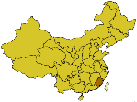
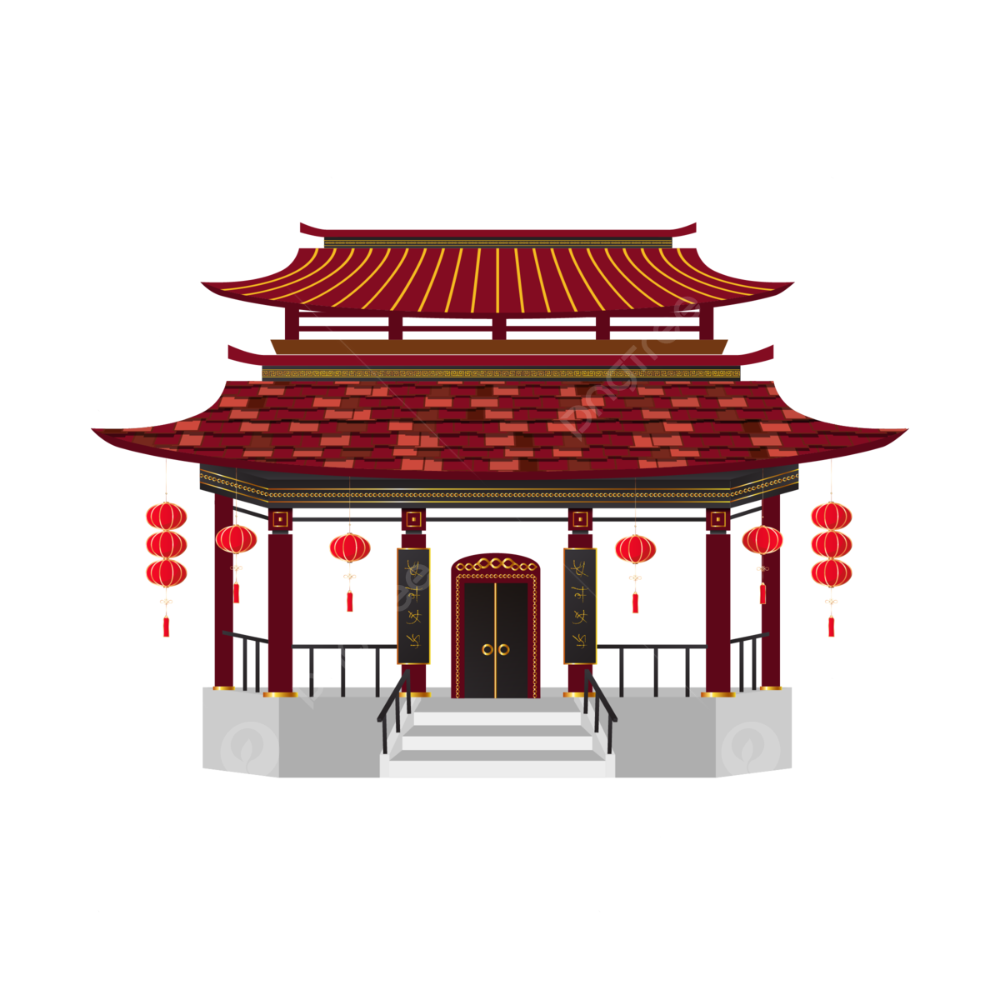
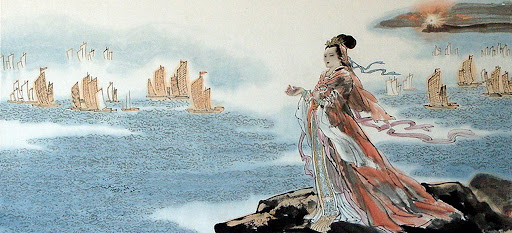

Matsu is a deity in Chinese folk belief, also known as Tianfei, Tianhou, Tianhou Shengmu, and Niangma. Throughout the ages, shipbuilders, sailors, travelers, merchants, and fishermen have all worshiped Matsu because in ancient times, sea voyages were often subject to attacks by winds and waves, and incidents of ships sinking and lives being lost were common. In order to ensure the safety of the crew, they placed their hopes in the blessings of the deity. Therefore, they erected statues of Matsu and, before setting sail, would first offer sacrifices to Tianfei, praying for a safe and favorable journey. Matsu shrines would also be established on board ships for worship. Matsu belief is a highly distinctive folk belief within Chinese society.
The Belief in Matsu |
Matsu Worship |
|---|---|
The belief in Matsu, or Matsuism, originated from the coast of the South Fujian province in China during the Song Dynasty and has since had over a thousand years of history. From its origin, Matsuism has extended to the coastal waters of East Asia and Southeast Asia. |
Matsu worship expanded beyond China and spread to Taiwan and other parts of Southeast Asia. Temples dedicated to Matsu became places of pilgrimage for those seeking protection during sea voyages. The worship of Matsu is deeply ingrained in the maritime culture, and her festivals are celebrated with elaborate processions and rituals. |
|  |  |
Matsu's story begins with her birth in the year 960 AD, during the Song Dynasty, in Meizhou, Putian, in Fujian Province, China. According to legend, her family belonged to the Lin clan, and she was named Lin Mo. Matsu's birth was accompanied by various supernatural signs, including flowers blooming out of season and the sudden calm of the surrounding sea.
As a child, Matsu displayed extraordinary qualities. She was said to be a compassionate and virtuous girl, and her presence had a calming effect on the sea. There are stories of Matsu demonstrating miraculous abilities, such as predicting the weather and rescuing fishermen from perilous situations.
Tragedy struck when Matsu's father and brothers were out at sea during a storm. Distressed by their peril, Matsu's mother had a dream in which Matsu appeared, guiding her family to safety. Inspired by the dream, Matsu's mother erected a shrine to honor her daughter and prayed for the safety of seafarers.
After her death at a young age, Matsu was posthumously recognized for her divine attributes. Numerous stories circulated about her interventions to protect sailors and fishermen. Matsu was eventually deified and became known as the "Queen of Heaven" and the protector of seafarers.
As you now know, during the Song Dynasty, Matsu made many miracles happen. She helped catch pirates, and saved people from devastating plagues, dreadful floods, and treacherous droughts. Also during that time, Matsu was recognized and promoted to different levels of Goddess four times; from Madam Goddess to Goddess Princess.
In the Yuan Dynasty and Ming Dynasty, Matsu again blessed human kind with many miracles. For her service, Matsu was recognized and appointed to “Tian Fei” (Heaven Goddess Princess).
During the Qing Dynasty, in the 23rd year of rule under Emperor Kangxi, Matsu was recognized and appointed to “Heaven Goddess Queen” and the edict of the National Spring and Autumn Worship. After that, the subsequent emperors of the Qing Dynasty recognized her thirteen additional times, which made Matsu the god with the longest title.
With the last appointment made by the Qing Dynasty Emperor Xianfeng, this title is a total of 62 words.
In one version it is said that in the 19th year under the rule of Emperor Kangxi, the Governor of Fujian and Zhejiang, Yao Qishen, wrote to the Emperor "Matsu made this island peaceful with her super natural powers. Please do anything you can to officially recognize her.” Trusting the Governor's personal opinion, Emperor Kangxi then recognized and appointed Matsu as "The God Mother of the Heaven".
In another version it is said that Matsu's name, "The God Mother of the Heaven" was appointed during the Ming Dynasty by Emperor Chongzhen. She was given the short name of angel of the holy spirit of "Bixia Yuan Jun" .
